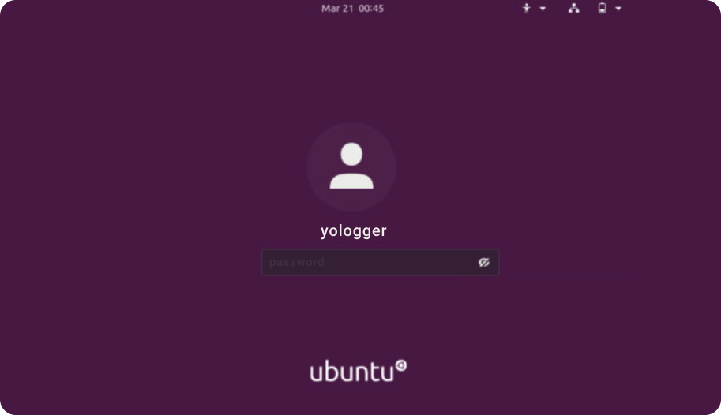
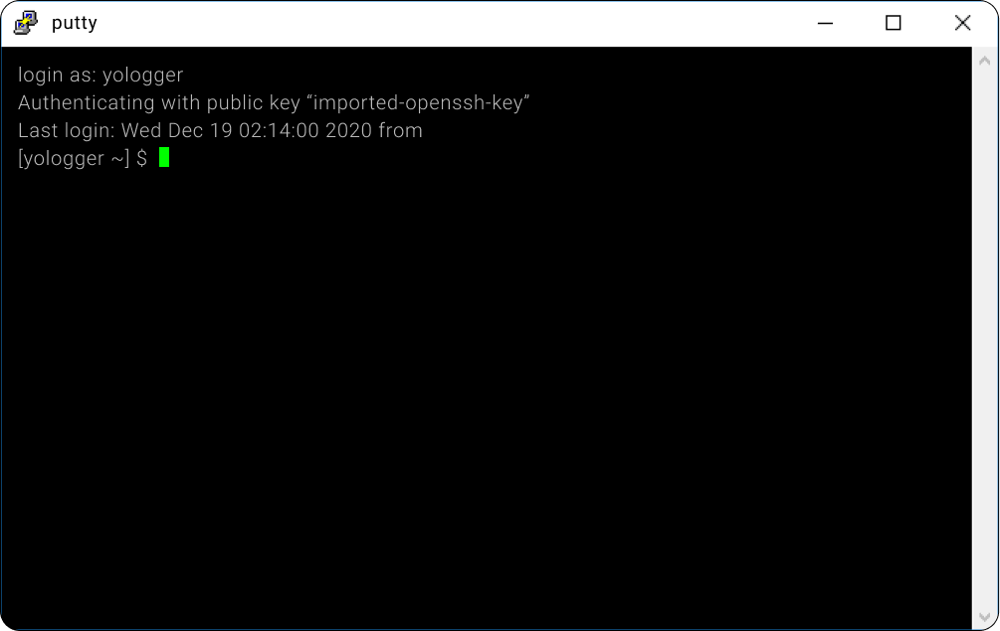
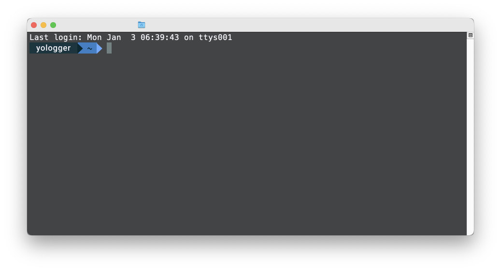

[Linux] 리눅스 쉘(Shell)이란?
목차
쉘이란?
쉘(Shell)은 입력한 명령어를 커널에 전달하여 특정한 작업을 수행하도록 하는 프로그램이다.
시스템에 설치된 쉘은 다음과 같이 확인한다.
1 | # cat /etc/shells |
대부분의 리눅스 배포판은 bash쉘을 기본으로 제공한다. 현재 쉘 세션에 접속한 계정의 시작 쉘은 다음과 같이 확인한다.
1 | # echo $SHELL |
계정마다 다른 쉘을 사용할 수 있으며, chsh명령어로 시작 쉘을 변경할 수 있다.
1 | # chsh -s [쉘 설치 경로] [사용자 이름] |
1 | # chsh -s /bin/dash user1 |
쉘 세션
쉘은 크게 세 가지의 세션이 존재한다. 세션에 따라 적용되는 환경설정 파일이 다르다.
(1) 로그인 쉘 세션
ID와 Password를 입력하여 연결된 쉘 세션을 로그인 쉘이라고 한다. GUI 로그인 화면에서 로그인하거나 SSH로 원격 접속하는 것이 로그인 쉘에 포함된다.


(2) 비로그인 쉘 세션
로그인 없이 연결된 쉘 세션을 비로그인 쉘이라고 한다. GUI 화면에서 터미널을 띄우는 경우가 비로그인 쉘에 해당한다.
